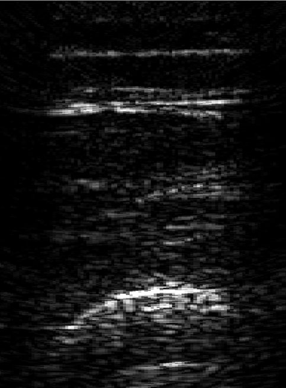
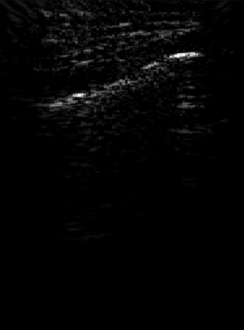
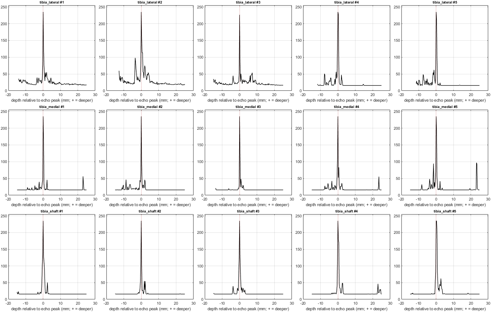

Bone-likelihood intensity cost: method proposal
Summary
The intensity term of the combined cost intensityPIMLOP hardly changes during a run (median 0.0017, against 0.35 for
the P-IMLOP term), so the two terms only balance at a weight near 0.99. The cause is the blur that gives the term its reach: it
also flattens the thin bone echo (section 1).
This document proposes a replacement that rests on three things bone shows in our images (section 3):
- a bright, thick echo: the reflection score \(R\);
- nothing below the echo: the nothing-below score \(S\);
- an echo that dims where the surface tilts away from the beam: the incidence weight \(w = c^{\,n}\).
\(R\) and \(S\) are filters. They are combined into a bone-likelihood map \(B = R \cdot S\), computed once per image, which decides what value is read at a point. The incidence weight comes from the probe-facing geometry that the cost already computes and decides how much each point counts; it changes with the pose. The cost is a weighted mean of the map along the predicted bone lines (section 7.1). No segmentation, and nothing derived from it, is used.
Status: designed, not implemented, not tested on our data. Section 8 lists the checks to run first, section 9 the open choices.
1. Problem
1.1 The current intensity term
The combined cost model intensityPIMLOP blends the intensity term \(I\) (cost model intensityLine)
with the mean P-IMLOP match error \(P\):
The intensity term
(cost_intensityLine.m)
places sample points \(\mathbf{s}_{im}\) every 0.1 mm along the probe-facing intersection lines of plane \(i\) and computes
where \(\tilde I_i\) is the image blurred with a Gaussian of width \(\sigma\) and \(M_i\) the number of sample points (a plane without visible bone counts as 0 evidence).
In the sweep intensityPIMLOP_20261106_144439_500 (420 runs) the two terms have similar sizes at the start pose,
but during a run they change by very different amounts:
| Quantity | Intensity term \(I\) | P-IMLOP term \(P\) |
|---|---|---|
| Value at the start pose | 0.85 – 0.89 (depends on smoothing \(\sigma\)) | 0.90 – 1.88 (depends on \(\kappa\)) |
| Median improvement over 325 runs that moved | 0.0017 | 0.35 |
| Runs where the term got worse | 20 % | 6 % |
The P-IMLOP term changes about 140 times more. Even at \(w = 0.99\) it still provides about half of the cost decrease, and at \(w \le 0.95\) more than 90 %. The two terms would contribute equally only at \(w \approx 0.992\). A weight that close to 1 makes it look as if the P-IMLOP term does not matter, while in fact the intensity term is the one that barely acts.
1.2 Why it barely moves
Our bone echo is a very thin line (well under 1 mm) on an almost empty background, so the blur lowers its peak a lot:
| \(\sigma\) (mm) | Brightest blurred value (÷ 255) | Background (÷ 255) | Mean evidence at start pose |
|---|---|---|---|
| 0 | 0.92 | 0.06 | – |
| 1.5 | 0.24 | 0.06 | 0.155 |
| 3 | 0.16 | 0.06 | 0.128 |
| 5 | 0.12 | 0.07 | 0.109 |
The start pose already sits between the background level and the blurred peak, so the term has only a few hundredths of room to
improve. Values measured on the 15 tibia images of the sweep (dataset validSnapshots_20260910_172849.mat).
1.3 Root cause: one \(\sigma\) doing two jobs
The blur width \(\sigma\) is asked to do two jobs that pull in opposite directions:
- Reach. A predicted line a few millimetres off the bone should still read some echo, so that the optimizer knows where to go. This needs a large \(\sigma\).
- Telling bone from other bright lines. A thick bone echo should score higher than a thin line. This needs \(\sigma\) close to the echo thickness.
A large \(\sigma\) dilutes the bone too, which is why the term changes so little. On top of that, the plain mean along the predicted line treats every point the same, although the bone itself is unevenly bright (section 3.3), so even the correct pose does not score clearly better. This proposal separates the jobs: a per-image map tells bone from other lines (sections 5.1 – 5.3), a separate step gives reach (section 5.4), and a per-point weight handles the uneven brightness (section 6).
2. Requirements and scope
2.1 No segmentation
The P-IMLOP term already uses the segmented bone surface. The new intensity term must not use the segmentation or any quantity computed by it, so that the two terms rest on independent evidence. The line we draw:
- Segmentation makes decisions: "these pixels are bone, those are not". It looks at the whole image, compares candidate lines and picks one.
- A filter makes no decisions. It applies the same local formula to every pixel and returns a score. Blurring is a filter; so is everything in this document.
The choice of where the bone is stays with the pose optimizer: it searches for the pose whose predicted bone lines land on the most bone-like pixels.
2.2 Fit with the optimization framework
- Same optimizer state (the 6D perturbation around the start pose), same image planes, and the same sample points along the
probe-facing intersection lines as
cost_intensityLine. - Work that does not depend on the pose is done once, in
functions/bonePoseOptimization/inputPreparation/. The cost function only reads prepared data; it loads no files and plots nothing. - The cost lies in [0, 1], with 0 best, like the other cost models, so it can be used on its own and inside a combined model with P-IMLOP (section 7.3).
2.3 Assumptions
- Linear probe. The sound is assumed to travel straight down the image columns, which fits our rectangular images. The nothing-below score, the incidence weight and the existing probe-facing filter all rely on it. A convex probe would need a beam direction per point, from a virtual apex \(\mathbf{a}\) behind the probe face, \(\mathbf{b}(\mathbf{p}) = (\mathbf{p} - \mathbf{a})/\lVert \mathbf{p} - \mathbf{a} \rVert\), slanted windows for \(S\), and a new pixel-to-mm mapping across the code. For now only linear probes are assumed.
- Phantom data. The images in this document come from a knee phantom (sections 3 and Appendix A).
3. What bone looks like in our images
Three observations about bone in our images drive the method. Each one leads to one part of it.


| Observation | Seen in | Part of the method |
|---|---|---|
| 3.1 Bone is bright and thick, but other lines can be just as bright | Figure 1, Figure 5 | Reflection score \(R\) (section 5.1) |
| 3.2 Below the bone there is (almost) nothing | Figures 1, 2, Appendix A | Nothing-below score \(S\) (section 5.2) |
| 3.3 The bone echo dims where the surface is tilted | Figure 2 | Incidence weight \(w\) (section 6) |
3.1 Bright and thick, but bright is not enough
Bone reflects most of the sound, so its echo is among the brightest structures in the image (about 235 in the tibia images, where the display clips). Brightness alone, however, also picks up the thin layer lines in the upper third of Figure 1, which are as bright as the bone. What differs there is the thickness along the beam: the bone is a thick band, the layer lines are thin. The reflection score \(R\) rewards brightness that fills a depth range about as thick as the bone echo.
3.2 Nothing below the bone
Bone stops the sound, so the region right below it is (almost) empty. The layer lines in Figure 1 have tissue speckle under them, and in Figure 2 there is speckle above the bone line but almost nothing below it. In the tibia images the level 3 – 10 mm below the echo is at the background value (about 16) in most images (Appendix A). The nothing-below score \(S\) rewards pixels whose column is empty just below.
3.3 The echo dims where the bone is tilted
Bone reflects sound like a mirror. Where the beam hits the surface squarely, the echo comes straight back to the probe and the bone looks bright. Where the surface is tilted, most of the echo bounces away sideways and misses the probe, so the bone looks dim or disappears. That is one reason for the dim stretches between saturated spots in Figure 2.
\(R\) and \(S\) cannot fix this: they describe the image, and a dim stretch is dim in the image. With a plain mean along the predicted line, the tilted parts drag the score down even at the correct pose, so the dip of the cost at the correct pose is shallow. The pose, however, tells us where the surface is tilted. The incidence weight uses that to let squarely hit points count more than tilted ones.
3.4 Support in the literature
The region under bone is the main clue for telling bone from soft-tissue interfaces in bone-segmentation work [2][3][4], and reading a bone-enhanced image under the CT-predicted visible surface is an established registration approach [9][10][11][12]. This proposal uses the same two ideas, but only as filters, without the step that picks a line.
Two other clues were considered and left out: the length/continuity of a bright line, and its direction. The predicted bone line is already long and smooth, so reading along it rewards both without any extra term.
4. Method overview
4.1 Two parts: what is read, and how much it counts
| Part | Depends on | Computed | Decides |
|---|---|---|---|
| Map \(\hat B\) (from \(R\), \(S\) and reach) | the image only | once per image, during input preparation | what value is read at a point |
| Weight \(w = c^{\,n}\) | the image plane and the candidate pose | at every cost evaluation, from geometry the cost already computes | how much that point counts |
The two parts do not overlap: changing the map never changes the weights, and the other way round. Each can be switched off for comparison: \(n = 0\) gives every point weight 1, and \(S = 1\) everywhere reduces \(B\) to \(R\).
4.2 Notation
| Symbol | Meaning | Unit |
|---|---|---|
| \(I(u, v)\) | Brightness of the B-mode image at column \(u\) and row \(v\) (row index grows with depth) | grey level 0 – 255 |
| \(N_v\) | Number of rows (image depth in pixels) | – |
| \(\Delta_v\) | Pixel height (depth per row), \(H / N_v\) | mm |
| \(b\) | Background level: brightness of empty, sound-free regions | grey level |
| \(p\) | Echo peak level: brightness of a strong echo | grey level |
| \(t\) | Tissue level: typical brightness of soft-tissue speckle | grey level |
| \(h\) | Thickness of the bone echo along depth, measured on our images (width at half height) | mm |
| \(\sigma_d\) | Width of the depth Gaussian in \(R\), \(\sigma_d = h / \sqrt{2\pi} \approx h / 2.5\) | mm |
| \(g\) | Gap: depth skipped right below a pixel before its window starts | mm |
| \(L\) | Window length: depth range looked at below the gap | mm |
| \(L_{\min}\) | Shortest usable window near the bottom edge | mm |
| \(R, S, B\) | Reflection score, nothing-below score, bone-likelihood; one value per pixel | 0 – 1 |
| \(\hat B\) | \(B\) after the reach step (section 5.4) | 0 – 1 |
| \(\mathbf{s}_{im}\), \(M_i\) | Sample point \(m\) on the predicted bone lines of plane \(i\); number of sample points of plane \(i\) | mm, – |
| \(\mathbf{n}_f\) | Outward unit normal of mesh face \(f\) at the candidate pose | – |
| \(\mathbf{e}_y\) | Unit image depth axis in 3D (plane.ey); the beam direction of a linear probe | – |
| \(c\) | Incidence, \(c = \mathbf{n}_f \cdot (-\mathbf{e}_y)\): 1 when the beam hits the surface squarely | – |
| \(n\), \(w\) | Incidence weight exponent; weight of a sample point, \(w = c^{\,n}\) | – |
In the code, images are stored as [column, row], so \(I(u, v)\) is image(u, v).
We use the clipping function
5. Per-image map: what value is read
Everything in this section is a filter on one image: the same local formula for every pixel, no decisions. The map depends only on the image, not on the pose, so it is computed once during input preparation.
5.1 Reflection score \(R\): is it bright and thick here?
Definition
First average each pixel with its neighbours above and below it, along depth only (the same column, nothing sideways), with Gaussian weights:
\[ \bar I(u, v) = \frac{\sum_{j} w_j \, I(u, v + j)}{\sum_{j} w_j}, \qquad w_j = \exp\!\left( -\frac{(j\,\Delta_v)^2}{2\sigma_d^2} \right). \]The sums run over the rows within \(3\sigma_d\) that lie inside the image, so the top and bottom edges are not darkened. The width comes from the measured thickness \(h\) of the bone echo (see "Choosing the echo thickness" below):
\[ \sigma_d = \frac{h}{\sqrt{2\pi}} \approx \frac{h}{2.5}. \]Then map the result to the range 0 to 1, from background to echo peak:
\[ R(u, v) = \operatorname{clip}\!\left( \frac{\bar I(u, v) - b}{p - b} \right). \]- Empty background gives \(R = 0\); an echo that fills the Gaussian gives \(R = 1\); speckle gives a small value.
- In the code this is the existing
blurWithGaussian(insidesmoothUltrasoundImages.m) with sigma along the image width set to 0.
Why average along depth
"Thickness" in an ultrasound image is measured along the beam, which runs down the columns. Averaging along depth dilutes a bright structure by how much of the Gaussian it fills: a thin line is mixed with its dark neighbours and scores low, a thick band keeps its brightness. Bone and layer lines are both long sideways, so averaging sideways would not help tell them apart.
| Bright structure along depth | Peak score \(R\) | Example (\(h = 2.4\) mm) |
|---|---|---|
| Thin line, thickness \(t \ll \sigma_d\) | \(\approx t / h\) | \(t = 0.4\) mm: about 0.17 |
| Band of thickness \(T\) | \(\operatorname{erf}\!\bigl(T / (2\sqrt{2}\,\sigma_d)\bigr)\) | \(T = h\): about 0.8; \(T \ge 2h\): about 1 |
The choice \(\sigma_d = h/\sqrt{2\pi}\) is what makes a thin line score \(t/h\), the same as a box average of height \(h\). The best \(h\) is the thickness of the bone echo itself:
- Smaller \(h\): thin layer lines score higher, and when \(h\) is no thicker than a layer line both score about the same.
- Larger \(h\): the bone is diluted as well. Both scores shrink, and the cost changes less during a run (the problem of section 1.2).
Box or Gaussian
A box average of height \(h\) and a Gaussian with \(\sigma_d = h/\sqrt{2\pi}\) tell thick from thin about equally well. They differ in how the cost behaves as a predicted bone line moves across a band:
| Box, height \(h\) | Gaussian, \(\sigma_d\) (chosen) | |
|---|---|---|
| Meaning | Fraction of the window filled by echo; a thin line scores exactly \(t/h\) | Centre weighted more; a thin line scores about \(t/h\) |
| Inside a thick band | Flat top: every position inside the band scores the same | A peak at the centre of the band |
| Cost as the line moves | Kinks where the window edge crosses the echo | Changes smoothly |
| Code | New | Already exists (blurWithGaussian) |
The optimizer (CMA-ES) needs no gradients, but a smooth cost with one clear lowest point is still easier to search and gives more consistent results across seeds.
Try it below. The made-up image has a thin layer line, speckle, and a thicker bone band 12 mm below it, both sloped. The coral line is the predicted bone line from the mesh, shifted by \(\Delta\): \(\Delta = 0\) lies on the bone, \(\Delta = -12\) mm on the layer line. The cost is \(1 - \text{mean } R\) along that line: the cost of section 7.1 without \(S\), reach and weights.
Image \(I\)
Averaged along depth \(\bar I\)
Reflection score \(R\)
Grey dashed: raw image (no averaging). Blue: Gaussian along depth. Orange: box (when ticked). Coral dot: current \(\Delta\).
Things to try: tick the box and compare the dips around (Delta = 0). At the default \(T = h\) the box gives a V with a sharp tip and kinks at its sides, the Gaussian a smooth bowl; raise \(T\) to 4 mm and the box dip gets a flat bottom, where every position inside the band costs the same. Set \(T = t = 0.4\) mm (like the tibia images) and see both dips become equally deep; raise \(\sigma_d\) well above \(T/2.5\) and see the bone dip get shallower too. Each dip is only about \(T\) plus a few \(\sigma_d\) wide, so a predicted line further away gets no pull: that is the reach question of section 5.4.
Choosing the echo thickness \(h\)
\(h\) describes something physical: how thick the bone echo is along the beam. That depends mainly on the probe (how long its
sound pulse is) and the scanner setting, plus the roughness and tilt of the surface. It is therefore a fixed
parameter (boneEchoThicknessMm, under fixedParameters), set by us from our own images and
measured again when the probe or scanner setting changes. It is given in mm, so it does not depend on the pixel size.
Proposed way to measure it, once per probe setting (open point O5):
- Pick several images where the bone is clearly visible.
- Take brightness profiles along depth across the bone echo, as in Figure 5, only where the bone surface runs roughly across the image (square to the beam, \(c \approx 1\) in the terms of section 6). A sloped surface looks thicker along the column than it is.
- Measure the depth range where the brightness is above halfway between the background and the echo peak.
- Use the median over the images.
This is a one-off measurement by a person, not a step in the pipeline, and it uses no segmentation output. \(h\) is not swept as a hyperparameter for now: judging a sweep needs accurate ground truth, which we don't have yet; the seed scatter in the last sweep (about 0.7 mm) is likely larger than its effect; and its effect is tangled with the reach choice. A small check sweep (0.5×, 1× and 2× the measured value) can follow once new ground truth exists.
Relation to the current intensity term
On its own, \(R\) is the smoothing of the current intensity term with different settings, not a new idea: it keeps only the second of the two jobs of section 1.3. The new parts of this proposal are the nothing-below score \(S\), the separate reach step and the incidence weighting.
| Step | Smoothing | Normalization | What it adds |
|---|---|---|---|
Current cost_intensityLine | Gaussian in both directions, \(\sigma\) = 1.5 – 5 mm, sized for reach | ÷ 255 | – |
| \(R\) | Gaussian along depth only, \(\sigma_d\) from \(h\) | \((\bar I - b)/(p - b)\), clipped | Thick echoes score higher than thin lines; full 0 – 1 range |
| \(B = R \cdot S\) | as \(R\) | as \(R\) | Nothing-below clue |
| \(\hat B\) | reach step (section 5.4) | back to 0 – 1 | Pull toward the bone from a few mm away |
| Weighted mean (section 6) | – | – | Tilted, dim parts of the bone count less |
5.2 Nothing-below score \(S\): is it empty under me?
Definition
For each pixel, look down its own column. Skip a gap \(g\) (to step over the pixel's own echo), then take a window of length \(L\). The rows in the window are
\[ \mathcal{W}(u, v) = \bigl\{\, v' \in \{1, \dots, N_v\} \;:\; g \lt (v' - v)\,\Delta_v \le g + L \,\bigr\}. \]Average the brightness in the window:
\[ \mu(u, v) = \frac{1}{|\mathcal{W}(u, v)|} \sum_{v' \in \mathcal{W}(u, v)} I(u, v'). \]Compare this average with two reference levels: the background \(b\) ("truly empty") and the tissue level \(t\) ("clearly tissue"):
\[ S(u, v) = \begin{cases} \operatorname{clip}\!\left( 1 - \dfrac{\mu(u, v) - b}{t - b} \right) & \text{if } |\mathcal{W}(u, v)|\,\Delta_v \ge L_{\min}, \\[10pt] 1 & \text{otherwise (window cut off by the bottom edge, see below).} \end{cases} \]- Window as dark as the background: \(S = 1\), "nothing below me, I could be bone".
- Window as bright as tissue or brighter: \(S = 0\), "there is tissue under me, I am probably not bone".
The dark stripe above bright structures
\(S\) at a pixel describes its window, not the pixel itself. A bright structure at depth \(d\) lowers \(S\) for every pixel at depth \(z\) whose window reaches it:
\[ d - g - L \;\le\; z \;\lt\; d - g . \]So in the \(S\) map every bright structure casts a dark stripe upward, of height \(L\), ending a distance \(g\) above the structure. Increasing the gap by some amount moves the stripe up by the same amount (Figure 4). The stripe itself is harmless: it lies in tissue, where \(R\) is low anyway, so \(B\) stays low there. What matters is whether the bone pixel's own window is empty.
Trailing echoes under the bone
In Figure 1 the bone band is followed by fainter echoes just below it. If the gap is small, the bone pixel's window contains them, \(\mu\) rises, \(S\) drops, and the bone is treated like a layer with tissue under it. The fix is a gap larger than the bone band plus its trailing echoes. If \(\tau\) is the distance from the bone pixel to the end of its trailing echoes:
\[ g \ge \tau \quad\Longrightarrow\quad \text{the trailing echoes fall outside the bone pixel's window.} \]Bottom edge of the image
The window only looks down the same column, so the top, left and right edges need no special care. Near the bottom, part or all of the window falls outside the image, where nothing is known. The rule in the definition above:
- Use the part of the window that lies inside the image.
- If that part is shorter than \(L_{\min}\) (for example 3 mm), set \(S = 1\): \(R\) alone decides there.
| Alternative | Effect |
|---|---|
| Treat any cut-off window as empty (\(L_{\min} = 0\)) | Simple, but \(S\) may rest on one or two noisy pixels. |
| Minimum length \(L_{\min}\), otherwise \(S = 1\) (proposed) | The edge neither helps nor hurts a pixel. |
| \(S = 0\) when the window does not fit | Bright structures near the bottom can never count as bone. Too strict for deep bones. |
In our tibia images the bone lies at 12 – 21 mm in a 48 mm deep image, so the bottom edge rarely matters.
Try it
A made-up image with a thin layer line at 8 mm, tissue speckle, and a bone band at 32 mm. Click a pixel in any of the four pictures to see its depth profile and scores. The three lower pictures are the \(R\), \(S\) and \(B\) maps: one cell per pixel, white = 1, black = 0.
Image (click a pixel)
R map
S map
B = R · S map
Things to try: compare the layer line with the bone; tick "Trailing echoes" and see the bone fade in the \(B\) map at \(g = 0.8\) mm; then raise the gap to 4 mm and see it return. Demo settings: \(\Delta_v = 0.8\) mm, \(b = 16\), \(p = 235\), \(t = 45\), \(h = 2.4\) mm (\(\sigma_d \approx 0.96\) mm), \(L = 6.4\) mm.
5.3 Bone-likelihood \(B = R \cdot S\)
Multiply the two scores pixel by pixel:
\[ B(u, v) = R(u, v)\; S(u, v). \]
\(R\), \(S\) and \(B\) all have the same size as the image, so this is an element-wise product (in MATLAB B = R .* S,
not a matrix product). A pixel scores high only when both clues agree:
| Pixel | \(R\) | \(S\) | \(B\) |
|---|---|---|---|
| Bone band | high (bright, thick) | high (empty below) | high |
| Thin layer line | medium | lower (speckle below) | low |
| Speckle in tissue | low | medium | low |
| Background below the bone | 0 | high | 0 |
5.4 Reach: a pull from a few millimetres away
\(B\) is sharp: it is high only on the bone band. Read directly, the cost gives the optimizer no hint when a predicted line is a few millimetres off the bone. Today this is solved by blurring, which is exactly what lowers the peak (section 1.2). The reach step turns \(B\) into \(\hat B\), which still pulls from a distance but keeps the full 0 – 1 range. Two options, still to be compared:
- Blur and rescale. Blur \(B\) and rescale each blurred map so its maximum is 1 again: \(\hat B_i = (G_\sigma * B_i) / \max(G_\sigma * B_i)\). This keeps the reach and restores the 0 – 1 range lost by plain blurring.
- Distance-based score. Score each sample point by how far it is from bone-like pixels, as \(\tfrac{1}{2}(d/\sigma)^2\) with a cap, so that it is in the same unit as the P-IMLOP position term.
6. Per-pose weighting: how much each point counts
Section 3.3 showed that the bone echo dims where the surface is tilted, and that no filter on the image can undo that. The pose can: for every sample point it tells how squarely the beam hits the predicted surface. The idea is to count each sample point by how bright we expect the bone to be there. Points where the predicted surface faces the probe squarely count fully; points on tilted surface count less. \(R\) and \(S\) decide what value is read at a point; the weight decides how much that point counts. So this is not a new map and it does not overlap with \(R\) or \(S\).
6.1 How the incidence is computed
For a sample point on mesh face \(f\), with outward unit normal \(\mathbf{n}_f\) at the candidate pose, and the image depth axis
\(\mathbf{e}_y\) (plane.ey, the beam direction of a linear probe):
\(c = 1\) means the surface faces the probe squarely; \(c = \cos 30^\circ \approx 0.87\) is the edge of today's facing filter.
Nothing new has to be computed. The current intensity cost already needs the normals to decide which parts of the cut face the probe (the far side of the bone can't be seen), and it computes \(c\) for every segment and every pose:
meshPlaneIntersectionPixelscuts the mesh with the plane and records which face each segment came from.selectProbeFacingIntersectionSegmentscomputes each face's outward normal (cross product of two triangle edges, normalized, flipped as a whole if most of the area points toward the mesh centre) and the scoresegmentFacingScore = dot(faceNormal, -plane.ey). That score is \(c\). Segments with \(c \ge \cos(30^\circ)\) are kept.computeProbeFacingPixelsForPosestoressegmentFacingScoreandprobeFacingSegmentMaskper plane, so \(c\) of the kept segments issegmentFacingScore(probeFacingSegmentMask), in the same order as the segments the cost samples.
A segment lies on one flat triangle, so every sample point on it gets that segment's \(c\). The normals come from the intensity cost's own geometry step, not from the P-IMLOP model, so the term stays independent of P-IMLOP. Because \(c\) is already computed for every pose, the weighting only adds \(c^n\) and a weighted mean.
6.2 Weight and weighted mean
The weight of sample point \(m\) in plane \(i\) is
\[ w_{im} = c_{im}^{\,n}. \]The exponent \(n\) sets how strict the weighting is; \(n = 0\) gives every point weight 1. Each plane's evidence becomes a weighted mean of the map along its predicted lines:
\[ E_i = \frac{\sum_{m=1}^{M_i} w_{im}\, \hat B_i(\mathbf{s}_{im})}{\sum_{m=1}^{M_i} w_{im}} . \]Dividing by \(\sum_m w_{im}\) keeps each plane's evidence in [0, 1], and stops the optimizer from lowering the cost just by turning the bone so that fewer points carry weight. With \(n = 0\), \(E_i\) is the plain mean.
6.3 Hard and soft versions of one idea
Today's facing filter (normalFacingToleranceDeg = 30°) is the hard version of the same idea: weight 1 inside the tolerance,
0 outside. The incidence weight is the soft version: inside the tolerance, the weight falls smoothly with the angle. Both act on the same
score \(c\), so their effects overlap (open point O3a, section 9.2).
6.4 Try it
A synthetic cross-section of a curved bone, with the probe at the top and the beam straight down. The echo brightness falls with the tilt as \(c^m\). Shift the predicted line with the pose error and compare the plain and the weighted cost.
Image and predicted line (brighter line = higher weight)
Things to try: with \(n = 0\) the two costs are equal. With \(n \approx 4\) the weighted cost at the correct pose is lower and its dip is deeper. With \(m = 0\) (the echo does not fade with tilt) the weighting gains almost nothing: it only helps when the dimness really comes from the angle. The demo also ignores the 30° facing filter, so that the effect of the weight alone is visible.
7. Final cost and integration
7.1 The cost
Putting the two parts together, the new term reads the map \(\hat B_i\) at the same sample points as the current term and takes the incidence-weighted mean per plane:
\[ C_{B} = 1 - \frac{1}{N_{\text{planes}}} \sum_{i=1}^{N_{\text{planes}}} \frac{\sum_{m=1}^{M_i} w_{im}\, \hat B_i(\mathbf{s}_{im})}{\sum_{m=1}^{M_i} w_{im}}, \qquad w_{im} = c_{im}^{\,n}. \]- A plane without visible bone counts as 0 evidence, as today. Every plane counts equally, whatever the length of its lines.
- With \(n = 0\) the inner fraction is the plain mean. With \(n = 0\) and \(\hat B_i\) replaced by \(\tilde I_i / 255\), \(C_B\) is exactly the current term \(I\) of section 1.1, which makes step-by-step comparisons easy.
- \(\hat B_i\) is read with
interp2exactly ascost_intensityLinereads the blurred image (same mm-to-pixel conversion and edge clamping).
Nothing else in the optimizer changes: same pose vector, same sampling, same planes. No segmentation output is read.
7.2 Where the code goes
| Piece | Location | When it runs |
|---|---|---|
| Map \(R\), \(S\), \(B\), \(\hat B\) | New function in functions/bonePoseOptimization/inputPreparation/, called from
prepareBonePoseOptimizationInputs.m next to
smoothUltrasoundImages.m;
stored under data.extra | Once per image (per hyperparameter combination) |
| Depth Gaussian for \(\bar I\) | Reuse blurWithGaussian (now a local function inside smoothUltrasoundImages.m) | Once per image |
| Sampling, incidence weight, cost | New evaluator in functions/bonePoseOptimization/costModels/, reusing the sampling of
cost_intensityLine.m; \(c\) taken from poseEvaluation. No change to functions/2D3Dintersection/ | Every cost evaluation |
| Validator, registration, config templates, tests | Next to the evaluator, as for every cost model | – |
Proposed file and config names are in notes.md (section "Where the code goes").
7.3 Combining with P-IMLOP
The term can be used on its own or as the intensity term of a combined model like intensityPIMLOP,
\(C = w\, C_B + (1 - w)\, P\). Because \(\hat B\) uses the full 0 – 1 range and is high only near the bone, the term is expected to
change much more during a run than the current 0.0017, so that the two terms balance at a weight further from 1. This is an
expectation, not a result: section 8 checks it. The model name and whether it replaces or sits next to intensityPIMLOP are
open (O4).
7.4 Settings
| Setting | Set per | How to choose it | Demo value |
|---|---|---|---|
| Background \(b\) | image | Median of the image; most pixels are empty background. | 16 |
| Echo peak \(p\) | image | A high percentile, e.g. the 99.9th. Our echoes clip at about 235. | 235 |
| Tissue level \(t\) | image | Typical speckle brightness. Open (O1): a rule that needs no segmentation, e.g. a percentile of the pixels above background. | 45 |
| Echo thickness \(h\) (sets \(\sigma_d\)) | probe and scanner setting | Fixed parameter, measured once on our images (section 5.1, O5). Not swept. | 2.4 mm (\(\sigma_d \approx 0.96\) mm) |
| Gap \(g\) | dataset | Just larger than the bone band plus trailing echoes, \(\tau\). | 0.8 – 4 mm |
| Window length \(L\) | dataset | Long enough to average out speckle; short enough to stop above the reverberation line, which appears about one bone depth further down (≈ 20 mm in the tibia images). | 6.4 mm |
| Minimum window \(L_{\min}\) | dataset | A few speckle sizes. | 3 mm |
| Reach | dataset | Open (O2): blur width of the rescaled map, or width and cap of the distance score (section 5.4). | – |
| Incidence weight exponent \(n\) | dataset | 0 turns the weighting off. Candidates 0, 2, 4 (section 6, O3c). | 4 |
\(b\), \(p\) and \(t\) are measured automatically from each image, so nothing is tuned by hand per image.
8. Validation plan
The ground truth is not accurate enough yet to judge the method by pose error, so the first checks need no ground truth. They run in this order; each one can stop or change the design before the next.
8.1 Unit tests on synthetic images
Synthetic images with known answers, so the tests need no ground truth (full list in notes.md, Test plan):
- Exact values of \(R\), \(S\), \(B\) for a single column; a thin line peaks at \(R \approx t/h\), a thick band at \(R \approx 1\).
- Layer line with speckle below versus bone band with background below: \(B\) of the bone is clearly higher.
- Trailing echoes: a small gap lowers the bone's \(S\); \(g \ge \tau\) restores it. Bottom-edge rule as in section 5.2.
- The map function receives no segmentation fields; the cost runs on data without
boneSurfaceMeasurements. - With \(n = 0\) the cost equals the plain-mean cost exactly; on a curved bone whose echo fades with tilt, the weighted dip is deeper.
- The weight of each sample point equals the facing score of the segment it was placed on.
8.2 Maps on real images
Compute \(R\), \(S\) and \(B\) for the phantom femur and tibia images and check by eye that the bone stays bright and the layer lines fade. This is also where the open measurements are made: the echo thickness \(h\) (O5), the trailing-echo depth \(\tau\) for the gap, and a candidate rule for the tissue level \(t\) (O1).
8.3 Brightness against incidence
Along the predicted lines at the start pose, plot the image brightness against \(c\). If the brightness clearly falls with \(c\), the weighting has something to correct, and the slope suggests \(n\) (O3c). If it does not, the dim stretches have another cause and \(n = 0\) is the honest choice.
8.4 Shape of the cost around the start pose
Move the pose along each of its six axes around the start pose and plot the current term and the new term. A useful term has a clear dip that is wider than a few millimetres (reach) and deeper than the current one. This check compares the two reach options (O2) and the effect of \(n\).
8.5 Balance with P-IMLOP
Run a small sweep with the new term inside the combined model and repeat the analysis of section 1.1: how much each term changes during a run, and at which weight the two contribute equally. The method has met its goal when that weight is clearly below 0.99. A further sign is agreement: the best poses of the intensity term alone and the P-IMLOP term alone should lie close to each other, since both look at the same bone.
9. Limitations and open points
9.1 Limitations
- Not tested. Nothing here has been computed on our real images yet (section 8.2 is the first check).
- Thin bone echo in the tibia images. Where the bone echo is as thin as the layer lines, \(R\) does not tell them apart (section 5.1).
- "Nothing below" is a weak difference in some images. In the tibia images the level 3 – 10 mm below the echo was about 16 (background) in nearly every image, but the level above was only slightly higher (17 – 31). The three lateral tibia images show texture both above and below (Appendix A).
- Trailing echoes under the bone (Figure 1) require a gap of a few millimetres, which weakens the clue for layer lines with tissue only right under them.
- Not all dimness comes from the angle. Speckle or the phantom material can also make the echo uneven; the incidence weight does not fix that part.
- Linear probe only (section 2.3).
- Phantom only. The knee phantom may differ from real tissue, for example in speed of sound and speckle level.
9.2 Open points
| ID | Question | Options | Next step |
|---|---|---|---|
| O1 | Tissue level \(t\) | A rule without segmentation, e.g. a percentile of the pixels above background | Try on femur and tibia images (8.2) |
| O2 | Reach (section 5.4) | Blur and rescale \(B\); or a capped distance score | Compare on the cost shape (8.4) |
| O3a | Incidence weight versus the 30° facing filter | Keep the cut and vary \(n\); or loosen the cut and let the weight do the work | Proposed start: keep the cut, vary only \(n\). Don't sweep both widely, their effects overlap |
| O3b | Planes with only grazing segments | Full say in the mean over planes (as now); or count such planes less, e.g. by their mean weight | Proposed start: full say; revisit if such planes show up |
| O3c | Value of \(n\) | Candidates 0, 2, 4 | Brightness against \(c\) on real images (8.3) |
| O4 | Model name and combination with P-IMLOP | Stand-alone model, combined model like intensityPIMLOP, or both | Decide after 8.2 – 8.4 |
| O5 | Measuring the echo thickness \(h\) | Procedure of section 5.1, only where \(c \approx 1\) | Measure on our images (8.2) |
10. References
Found with the Consensus literature search on 2026-11-11. Only the abstracts were read.
- Jain AK, Taylor RH. Understanding bone responses in B-mode ultrasound images and automatic bone surface extraction using a Bayesian probabilistic framework. 2004. link
- Foroughi P, et al. Ultrasound bone segmentation using dynamic programming. IEEE Ultrasonics Symposium, 2007. link
- Jia R, et al. Automatic bone segmentation in ultrasound images using local phase features and dynamic programming. ISBI, 2016. link
- Pandey PU, et al. Fast and automatic bone segmentation and registration of 3D ultrasound to CT for the full pelvic anatomy: a comparative study. IJCARS, 2018. link
- Hacihaliloglu I, et al. Bone surface localization in ultrasound using image phase-based features. Ultrasound Med Biol, 2009. link
- Hacihaliloglu I, et al. Automatic bone localization and fracture detection from volumetric ultrasound images using 3-D local phase features. Ultrasound Med Biol, 2011. link
- Hacihaliloglu I, et al. Automatic adaptive parameterization in local phase feature-based bone segmentation in ultrasound. Ultrasound Med Biol, 2011. link
- Karamalis A, et al. Ultrasound confidence maps using random walks. Med Image Anal, 2012. link
- Brendel B, et al. Registration of 3D CT and ultrasound datasets of the spine using bone structures. Comput Aided Surg, 2002. link
- Brendel B, et al. Bone registration with 3D CT and ultrasound datasets. 2003. link
- Tümer N, et al. Three-dimensional registration of freehand-tracked ultrasound to CT images of the talocrural joint. Sensors, 2018. link
- Penney GP, et al. Cadaver validation of intensity-based ultrasound to CT registration. MICCAI, 2006. link
Appendix A. Evidence from tibia images

validSnapshots_20260910_172849.mat (mean of the 10 brightest columns, depth 0 at the echo peak, positive = deeper).
Below the echo the level is flat at the background value in most images; the lateral images (top row, left) show texture on
both sides. The small peak about 23 mm below the echo in some medial and shaft images is likely a reverberation.| Image group | Echo peak | Mean 3 – 10 mm above | Mean 3 – 10 mm below | Image median |
|---|---|---|---|---|
| tibia lateral #1 – #3 | 226 – 235 | 21 – 31 | 24 – 31 | 20 – 21 |
| tibia lateral #4 – #5 | 235 | 23 – 25 | 16 | 16 |
| tibia medial #1 – #5 | 235 | 16 – 21 | 16 | 16 |
| tibia shaft #1 – #5 | 235 | 16 – 18 | 16 – 18 | 16 |
Appendix B. Design history
How the design got here, so later readers see the reasoning, not only the result. More detail in notes.md, Design history.
- 2026-11-11. The literature report listed three approaches: the bone-likelihood map ("A"), reflection at bone thickness ("B") and weighting by how squarely the beam hits the surface ("C").
- 2026-11-13. "B" turned out to be the reflection score \(R\) inside \(B = R \cdot S\), and also the current smoothing with different settings, so it is documented here and gets no folder of its own. Box versus Gaussian compared with the demo of section 5.1: Gaussian chosen. The echo thickness \(h\) made a fixed, measured parameter rather than a hyperparameter.
- 2026-11-13. "C" checked against A and B: no overlap, since A and B change the map that is read and C changes how much each point counts. It became the answer to uneven bone brightness (O3). Settled concerns: the normals come from the intensity cost's own geometry step, not from P-IMLOP; the incidence is already computed for every pose; only linear probes for now.
- 2026-11-13. Document restructured as a method proposal: the three observations of section 3 now lead to the three parts of the method, and incidence weighting is one of them rather than an add-on.